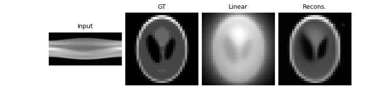
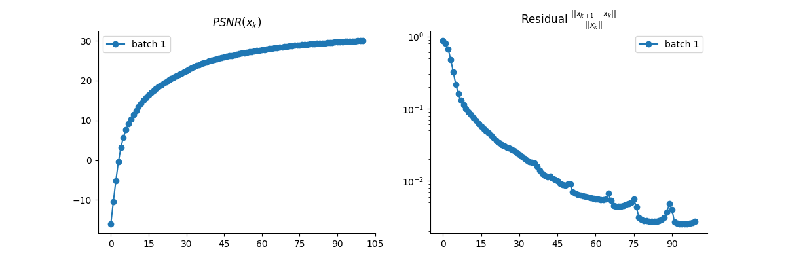

Note
Go to the end to download the full example code
Vanilla PnP for computed tomography (CT).
This example shows how to use a standart PnP algorithm with DnCNN denoiser for computed tomography.
import deepinv as dinv
from pathlib import Path
import torch
from deepinv.models import DnCNN
from deepinv.optim.data_fidelity import L2
from deepinv.optim.prior import PnP
from deepinv.optim.optimizers import optim_builder
from deepinv.utils.demo import load_url_image
from deepinv.utils.plotting import plot, plot_curves
Setup paths for data loading and results.
BASE_DIR = Path(".")
RESULTS_DIR = BASE_DIR / "results"
Load image and parameters
# Set the global random seed from pytorch to ensure reproducibility of the example.
torch.manual_seed(0)
device = dinv.utils.get_freer_gpu() if torch.cuda.is_available() else "cpu"
# Set up the variable to fetch dataset and operators.
method = "PnP"
img_size = 32
url = "https://mycore.core-cloud.net/index.php/s/9EzDqcJxQUJKYul/download?path=%2Fdatasets&files=SheppLogan.png"
x = load_url_image(
url=url, img_size=img_size, grayscale=True, resize_mode="resize", device=device
)
operation = "tomography"
Set the forward operator
We use the deepinv.physics.Tomography
class from the physics module to generate a CT measurements.
noise_level_img = 0.03 # Gaussian Noise standard deviation for the degradation
n_channels = 1 # 3 for color images, 1 for gray-scale images
physics = dinv.physics.Tomography(
img_width=img_size,
angles=100,
circle=False,
device=device,
noise_model=dinv.physics.GaussianNoise(sigma=noise_level_img),
)
# Use parallel dataloader if using a GPU to fasten training,
# otherwise, as all computes are on CPU, use synchronous data loading.
num_workers = 4 if torch.cuda.is_available() else 0
Set up the PnP algorithm to solve the inverse problem.
We use the Proximal Gradient Descent optimization algorithm.
The algorithm alternates between a denoising step and a gradient descent step.
The denoising step is performed by a DNCNN pretrained denoiser deepinv.models.DnCNN.
Set up the PnP algorithm parameters : the stepsize, g_param the noise level of the denoiser
and lambda the regularization parameter. The following parameters have been chosen manually.
# Logging parameters
verbose = True
plot_metrics = True # compute performance and convergence metrics along the algorithm, curved saved in RESULTS_DIR
params_algo = {"stepsize": 1.0, "g_param": noise_level_img, "lambda": 0.01}
max_iter = 100
early_stop = True
# Select the data fidelity term
data_fidelity = L2()
# Specify the denoising prior
denoiser = DnCNN(
in_channels=n_channels,
out_channels=n_channels,
pretrained="download", # automatically downloads the pretrained weights, set to a path to use custom weights.
train=False,
device=device,
)
prior = PnP(denoiser=denoiser)
# instantiate the algorithm class to solve the IP problem.
model = optim_builder(
iteration="PGD",
prior=prior,
data_fidelity=data_fidelity,
early_stop=early_stop,
max_iter=max_iter,
verbose=verbose,
params_algo=params_algo,
)
Downloading: "https://mycore.core-cloud.net/index.php/s/9EzDqcJxQUJKYul/download?path=%2Fweights&files=dncnn_sigma2_gray.pth" to /home/runner/.cache/torch/hub/checkpoints/dncnn_sigma2_gray.pth
0%| | 0.00/2.55M [00:00<?, ?B/s]
2%|▏ | 64.0k/2.55M [00:00<00:04, 607kB/s]
9%|▉ | 232k/2.55M [00:00<00:02, 906kB/s]
23%|██▎ | 592k/2.55M [00:00<00:01, 1.94MB/s]
33%|███▎ | 864k/2.55M [00:00<00:00, 2.23MB/s]
44%|████▍ | 1.12M/2.55M [00:00<00:00, 2.42MB/s]
56%|█████▌ | 1.43M/2.55M [00:00<00:00, 2.69MB/s]
66%|██████▋ | 1.70M/2.55M [00:00<00:00, 2.36MB/s]
78%|███████▊ | 1.99M/2.55M [00:00<00:00, 2.57MB/s]
90%|████████▉ | 2.29M/2.55M [00:01<00:00, 2.70MB/s]
100%|██████████| 2.55M/2.55M [00:01<00:00, 2.38MB/s]
Evaluate the model on the problem and plot the results.
The model returns the output and the metrics computed along the iterations.
For cumputing PSNR, the ground truth image x_gt must be provided.
y = physics(x)
x_lin = physics.A_adjoint(y) # linear reconstruction with the adjoint operator
# run the model on the problem.
x_model, metrics = model(
y, physics, x_gt=x, compute_metrics=True
) # reconstruction with PnP algorithm
# compute PSNR
print(f"Linear reconstruction PSNR: {dinv.utils.metric.cal_psnr(x, x_lin):.2f} dB")
print(f"PnP reconstruction PSNR: {dinv.utils.metric.cal_psnr(x, x_model):.2f} dB")
# plot images. Images are saved in RESULTS_DIR.
imgs = [y, x, x_lin, x_model]
plot(
imgs,
titles=["Input", "GT", "Linear", "Recons."],
save_dir=RESULTS_DIR / "images",
show=True,
)
# plot convergence curves. Metrics are saved in RESULTS_DIR.
if plot_metrics:
plot_curves(metrics, save_dir=RESULTS_DIR / "curves", show=True)
- 
- 
Linear reconstruction PSNR: -16.02 dB
PnP reconstruction PSNR: 30.03 dB
Total running time of the script: (0 minutes 10.590 seconds)